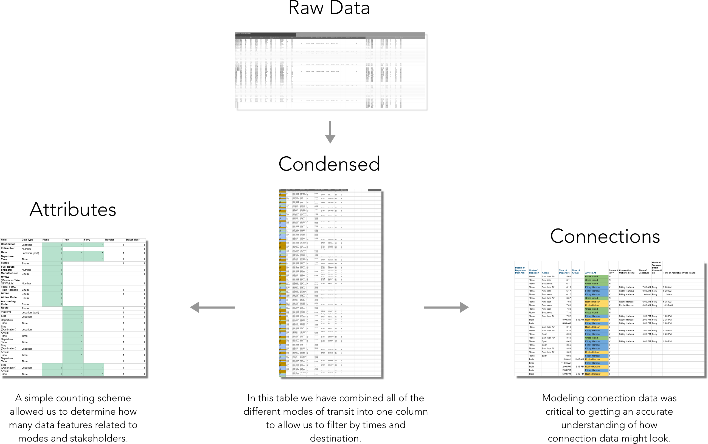

The Final Product
The Process
Our entire process PDF, including research, methodology, and critiques, can be found HERE.
Research
Stakeholder Analysis
An important part of my process was familiarizing myself with the needs presented by the stakeholders of the environmental display board.

User Interviews
To further our understanding of user needs, we reached out to friends and families who frequent transit centers.

Color Study
Styleguide
In order to ensure consistency in our teams parallel design process, we identified a preliminary style guide before moving forward.
Data Modelling
The unique nature of designing for a populated transit center required the use of data modelling. With my background in excel, I lead the effort to analyze the immense data of transit into and out of the hub.

Ideation
Sketches
We began the ideation process through sketching some possible ways an environmental display board could manifest itself physically, as a kiosk or interactive screen. Below are some of my sketches.

Wireframes
After establishing a general direction for our board, we each experimented with bringing our idea to life via lo fi prototypes, displayed below.
Iteration
The iteration process was largely focused on perfecting our designs visually so they matched the data models we created and also addressed the needs presented to us through our research. Our team worked in parallel, with myself largely focused on the tables and layout.
Tables
I focused on information hierarchy, visual cues, and balancing needs of users with needs of stakeholders, that is promoting the pass without obfuscating important information.
Layout
We developed various iterations of a gridded format, finally arriving at a horizontal sliding view. We ultimately chose a lighter user interface with a darker upcoming departures screen to increase readability.
Animation
Animation made use of preparatory movement in the opposite direction before moving quickly off screen, chained collision to initiate action, and easing. We kept a static upcoming departures card and dynamic destination cards that slide to the right after a fixed amount of time. A timer also warns the user of when their data will expire from view, while a touch signal provides the necessary perceptual affordance that invites users to hold down the destination icons for more screen time.
The final deliverable for this project was the animated board prototype.
Reflection
During the design process we had big design changes in each iteration until, finally on the third iteration we found the basic format for our layout that suited the needs of all of our personas. Ideas like upcoming departures and the map came and went based on space availability, and ultimately the user personas helped us to prioritize what was the most effective use of limited space. Data modeling continued to be an exercise for us throughout each iteration. Though we analyzed the data at the outset, we had fresh needs with each iteration that demanded that we model the data in anew to ensure that we could support our ideas. Work delegation was instrumental in allowing individuals to play with ideas as they saw fit, and develop depth of iteration.